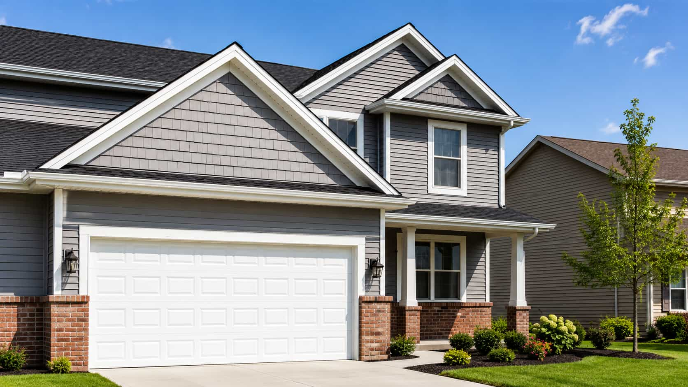
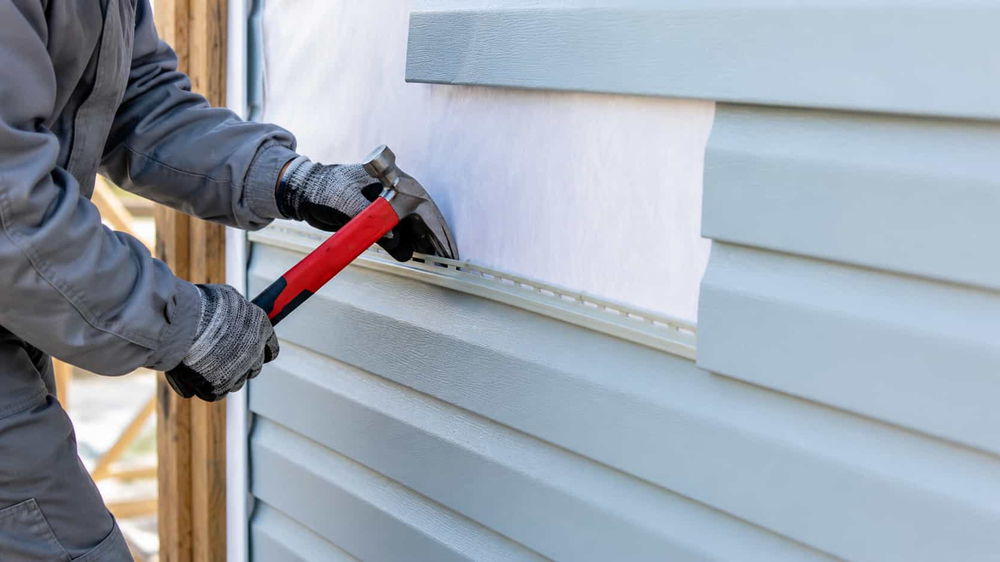

Tell us your
siding goal
Share a few details about your project and what you're looking for.

Paneli helps homeowners compare independent siding provider options for installation, replacement, repair, and consultation. The platform does not perform siding work directly.
Share a few details about your project and what you're looking for.
We match you with trusted providers in your area.
Compare quotes, experience, ratings, and service details.
You decide who to work with — directly and confidently.
From installation to repairs, Paneli helps you find the right fit.
View All ServicesVerify credentials directly with each independent provider.
Ask about similar exterior cladding projects and material familiarity.
Compare scope, materials, labor, disposal, and warranty details.
Review scheduling expectations and communication rhythm directly.
Paneli helps homeowners compare independent siding provider options. It does not install, repair, replace, inspect, paint, maintain, or consult on siding work directly.
Compare how each provider explains scope and materials.
Ask whether estimates are itemized and easy to understand.
Verify licensing, insurance, timeline, and warranty details directly.

Homeowners can use siding material conversations as part of the provider comparison process. The goal is not to rush a choice, but to understand what each independent company includes.
Ask how vinyl, fiber cement, wood, or metal siding may affect appearance, upkeep, and estimate structure.
Compare whether materials, labor, trim, disposal, and possible repairs are clearly separated.
Review material and labor warranty terms directly with each provider before deciding.
The platform is designed for provider comparison. Independent companies handle their own estimates, availability, project communication, and work details.
Paneli helps homeowners organize siding provider comparison around service intent and location.
Homeowners should verify every important project detail directly with any provider they choose.
Siding choices can involve materials, trim, repairs, disposal, scheduling, warranties, and provider fit. Paneli keeps the comparison path focused and easier to follow.
These answers keep the platform role clear: Paneli helps with comparison, while independent providers handle their own project details.
Start with your siding goal and review independent provider options directly.
Providers are independent. Homeowners verify details directly.